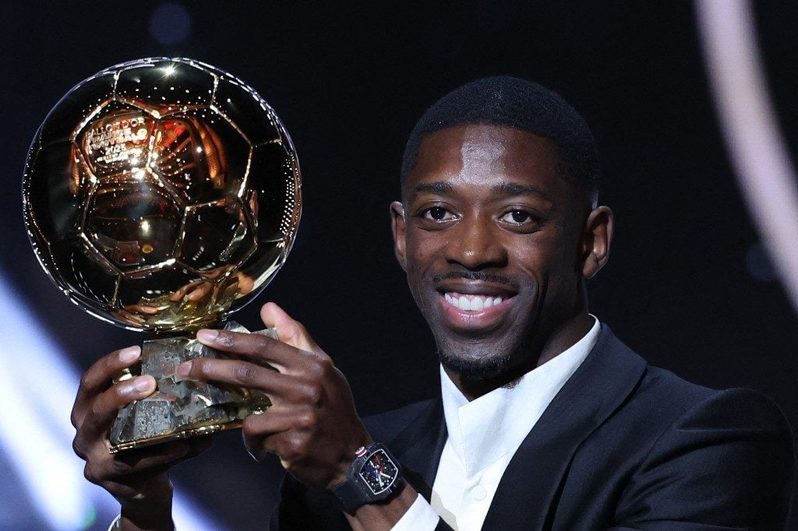
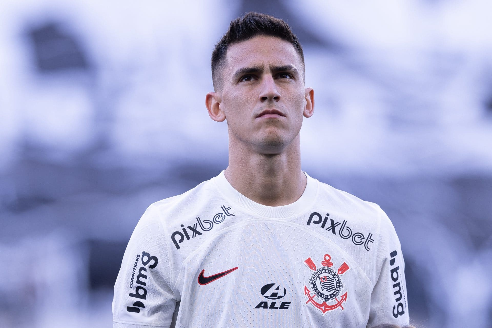

Ousmane Dembélé, do PSG, conquista sua 1ª Bola de Ouro
O atacante do Paris Saint-Germain Ousmane Dembélé venceu a Bola de Ouro nesta segunda-feira 22, em cerimônia realizada no Théâtre du Châtelet, em Paris, tornando-se o sexto jogador francês a receber a grande honraria do futebol.
Ousmane Dembélé foi eleito o melhor jogador do mundo pela France Football na última segunda-feira (22) e a premiação fez com que igualasse uma marca importante de Lionel Messi. O atacante do PSG venceu a Bola de Ouro em uma temporada de tríplice coroa com seu clube e atingiu as 51 participações diretas em gols durante 2024/25.
Ao receber a premiação das mãos de Ronaldinho Gaúcho, Ousmane Dembélé não escondeu a emoção com tal realização e aproveitou para fazer agradecimentos diretos ao PSG como um todo.

Corinthians é condenado pelo CAS por dívida com Rojas e pode sofrer novo transfer ban
O Corinthians foi condenado pelo CAS (Corte Arbitral do Esporte) a pagar mais de R$ 40 milhões ao meio-campista Matías Rojas, que rescindiu o seu contrato com o clube no ano passado alegando atraso no depósito de direitos de imagem. O caso pode implicar em um novo transfer ban.
Em crise financeira, a diretoria alvinegra já foi comunicada da decisão e busca um acordo com o estafe do jogador, que atualmente defende o Portland Timbers, dos Estados Unidos. As conversas já foram abertas, mas ainda se encontram em um estágio inicial.

Com golaço e assistência de Vini Jr., Real vence o Levante e vai a 18 pontos
Vini Jr. voltou a brilhar e foi decisivo na vitória do Real Madrid nesta terça-feira. O time de Xabi Alonso venceu o Levante por 4 a 1 na sexta rodada da LaLiga, no Ciudad de Valencia, e manteve a invencibilidade no torneio. O brasileiro fez o primeiro, deu o passe para que Mastantuono ampliasse, e Mbappé fez mais dois.
Franco Mastantuono balançou as redes pela primeira vez com a camisa do Real Madrid nesta terça-feira. Anunciado em agosto, o meia de 18 anos foi titular e recebeu o passe de Vini Jr. para ampliar para o Real contra o Levante.
Kylian Mbappé fez os dois gols que fecharam o placar contra o Levante. Aos 18 minutos, ele balançou as rede com uma cavadinha de pênalti, após Arda Güler ser derrubado por Elgezabal na área. Kylian se isola na artilharia da LaLiga com nove gols.